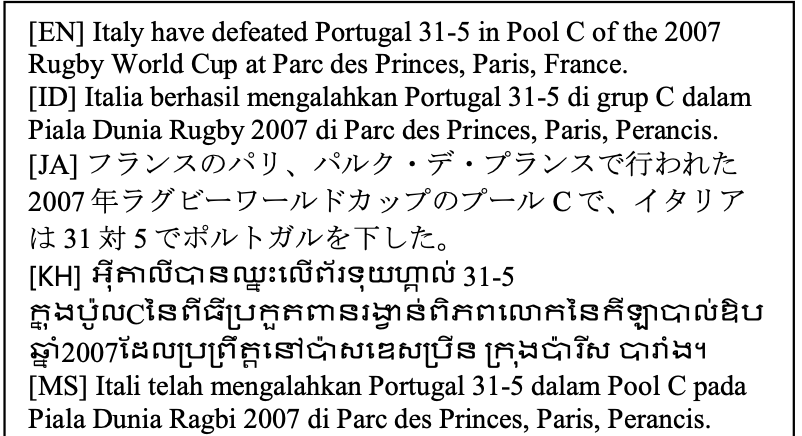
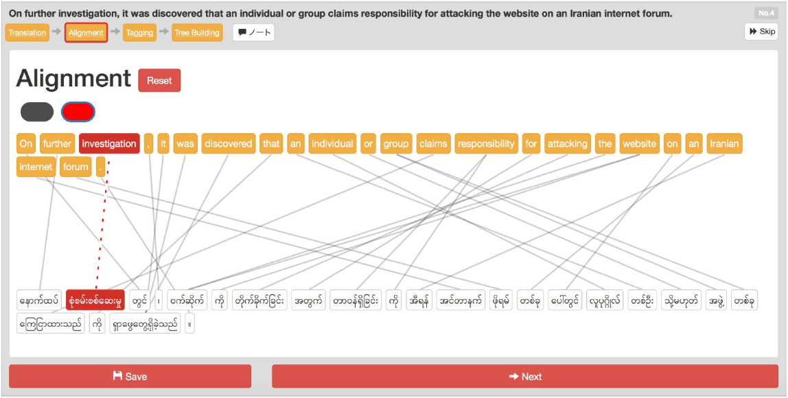
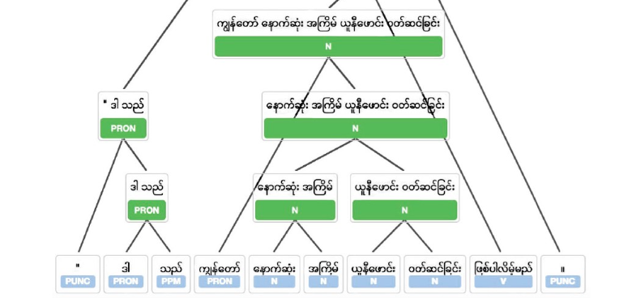

<!DOCTYPE html>
<html lang="en">

<head>

    <meta charset="utf-8">
    <meta http-equiv="X-UA-Compatible" content="IE=edge">
    <meta name="viewport" content="width=device-width, initial-scale=1">
    <meta name="description" content="">
    <meta name="author" content="">

    <title>Kanchan Bhale/title>
    <link rel="shortcut icon" href="img/a-icon.ico" />

    <!-- Bootstrap Core CSS -->
    <link rel="stylesheet" href="css/bootstrap.min.css" type="text/css">

    <!-- Custom Fonts -->
    <link href='http://fonts.googleapis.com/css?family=Open+Sans:300italic,400italic,600italic,700italic,800italic,400,300,600,700,800' rel='stylesheet' type='text/css'>
    <link href='http://fonts.googleapis.com/css?family=Merriweather:400,300,300italic,400italic,700,700italic,900,900italic' rel='stylesheet' type='text/css'>
    <link rel="stylesheet" href="font-awesome/css/font-awesome.min.css" type="text/css">

    <!-- Plugin CSS -->
    <link rel="stylesheet" href="css/animate.min.css" type="text/css">

    <!-- Custom CSS -->
    <link rel="stylesheet" href="css/creative.css" type="text/css">

    <!-- HTML5 Shim and Respond.js IE8 support of HTML5 elements and media queries -->
    <!-- WARNING: Respond.js doesn't work if you view the page via file:// -->
    <!--[if lt IE 9]>
        <script src="https://oss.maxcdn.com/libs/html5shiv/3.7.0/html5shiv.js"></script>
        <script src="https://oss.maxcdn.com/libs/respond.js/1.4.2/respond.min.js"></script>
    <![endif]-->

</head>

<body id="page-top">

    <nav id="mainNav" class="navbar navbar-default navbar-fixed-top">
        <div class="container-fluid">
            <!-- Brand and toggle get grouped for better mobile display -->
            <div class="navbar-header">
                <button type="button" class="navbar-toggle collapsed" data-toggle="collapse" data-target="#bs-example-navbar-collapse-1">
                    <span class="sr-only">Toggle navigation</span>
                    <span class="icon-bar"></span>
                    <span class="icon-bar"></span>
                    <span class="icon-bar"></span>
                </button>
                <a class="navbar-brand page-scroll"  href="index.html">Home</a>
            </div>

            <!-- Collect the nav links, forms, and other content for toggling -->
            <div class="collapse navbar-collapse" id="bs-example-navbar-collapse-1">
                <ul class="nav navbar-nav navbar-right">
                    <li>
                        <a class="page-scroll" href="#contact">Contact</a>
                    </li>
                </ul>
            </div>
            <!-- /.navbar-collapse -->
        </div>
        <!-- /.container-fluid -->
    </nav>

    <section class="bg-primary" id="about">
        <div class="container">
            <div class="row">
                <div class="col-lg-8 text-center" style="text-align: left">
                    <!-- <hr class="light"> -->
                    <h2 style="font-style: italic">Multilingual Large Language Model Transformer for Indigenous Languages<h2>
                    <h4>CONCEPT</h4>
                    <p class="text-faded" style="font-size: small">
                   Languages play a central role in shaping cultural identity, history, and heritage. Yet many indigenous languages remain under-resourced, posing a significant risk of language loss. Developing computational tools for these languages requires overcoming challenges such as data scarcity, code mixing, and limited technological reach. This project presents a multilingual large language model (LLM) specifically tailored to address these gaps. By incorporating both text and speech data from a range of under-resourced languages, our approach aims to advance natural language processing (NLP) capabilities for communities that lack robust digital infrastructure. The primary motivation behind this work is to promote linguistic diversity and cultural preservation through modern technology.  </p> 
                    <h4>DATA</h4>
                    <p class="text-faded" style="font-size: small">
                    1. Textual Data Collection
                        <br><br>
A large-scale text corpus was compiled from publicly available sources and community contributions. The corpus spans twelve languages, culminating in approximately 452 million sentences (around 9 billion tokens). To capture broad linguistic variability, the data includes:
[1]Formal Text: Newspaper articles, government documents, and academic content.
[2]Informal Text: Social media posts, forum discussions, and conversational data.
[3]Code-Mixed Data: Situations where two or more languages are blended within a single sentence.
All data underwent normalization, removing extraneous symbols and converting inconsistent spacing or punctuation. Duplicate entries were filtered out to maintain dataset quality. Each language’s share in the corpus ranged from 5% to 15%, depending on population size and data availability.

                    <br><br>
                    1. Speech Data Collection
                    <br><br>
                   In addition to textual data, we collected a specialized speech dataset covering twenty-two major languages. Each language has over 10,000 utterances, recorded by both male and female speakers across varied age groups. The recording protocol emphasized:
[1]Balanced Acoustic Settings: Indoor and outdoor scenarios to capture background noise variations.
[2]Dialectal Representation: Speakers from different regions to represent dialectical differences.
[3]Phonetic Diversity: Scripts and prompts designed to cover the full range of phonemes, including code-mixed prompts.
Quality checks were implemented to screen for microphone issues, background noise, and speaker mispronunciations. This speech corpus serves as the basis for developing both ASR and TTS components.

 </p>
                    <h4>PROCESS</h4>
                    <p class="text-faded" style="font-size: small">
                   The core model is a transformer-based LLM featuring:
                    <ul class="text-faded" style="font-size: small">
                        <li>
                        Layers: 24 in total (12 encoder layers + 12 decoder layers for an encoder-decoder design)
                        </li>
                        <li>
                        Hidden Size: 1024</li>
                        <li>
                        Feed-Forward Size: 4096
                        </li>
                        <li>
                        Attention Heads: 16 per layer
                        </li>
                        <li>
                        Vocabulary Size: 128,000 subword tokens, generated using Byte Pair Encoding (BPE)
                        </li>
                    </ul>
                    The large vocabulary ensures coverage of multiple scripts, as well as code-mixed text. Subword tokenization allows the model to handle rare words and morphological variations more effectively.
                    </p>
                  <!-- <a href="http://people.ischool.berkeley.edu/~japple/jeopardy/" " class="btn btn-primary btn-xl page-scroll" target="_blank">View Visualization</a>
             -->   </div>
                <div class="col-lg-4 text-center" style="padding-top: 100px">
                
                <p>Dataset comprising 20,000 sentences from different languages, originally sampled from the English Wikinews in 2014.</p>
                
                <p>Wordnet</p>
                
                <p>Tree Building Interface</p>
                </div>
            </div>
        </div>
    </section>

    <section id="contact">
        <div class="container">
            <div class="row" class="call-to-action">
                <div class="col-lg-8 col-lg-offset-2 text-center">
                    <h2 class="section-heading">Get In Touch!</h2>
                    <hr class="primary">
                </div>
                <div class="col-lg-2 col-lg-offset-3 text-center">
                    <a href="https://github.com/KanchanBhale" class="fa fa-github fa-3x wow bounceIn"></a>
                </div>
                <div class="col-lg-2  text-center">
                    <a href="https://www.linkedin.com/in/kanchan-vinayak-bhale" class="fa fa-linkedin fa-3x wow bounceIn"></a>
                </div>
                <!--div class="col-lg-1 text-center">
                    <a class="fa fa-phone fa-3x wow bounceIn"></i>
                </div-->
                <div class="col-lg-2 text-center">
                    <a href="mailto:kanchanbhale18@gmail.com" class="fa fa-envelope-o fa-3x wow bounceIn" data-wow-delay=".1s"></a>
                </div>
            </div>
        </div>
    </section>

    <!-- jQuery -->
    <script src="js/jquery.js"></script>

    <!-- Bootstrap Core JavaScript -->
    <script src="js/bootstrap.min.js"></script>

    <!-- Plugin JavaScript -->
    <script src="js/jquery.easing.min.js"></script>
    <script src="js/jquery.fittext.js"></script>
    <script src="js/wow.min.js"></script>

    <!-- Custom Theme JavaScript -->
    <script src="js/creative.js"></script>

</body>

</html>
